Bayamón · Desde 1994
San Fernando Vet
Tu mascota en manos expertas
Cuidado veterinario de confianza en Bayamón desde 1994. Perros y gatos en buenas manos.
1994 cuidando mascotas
Perros · Gatos

Bayamón · Desde 1994
Tu mascota en manos expertas
Cuidado veterinario de confianza en Bayamón desde 1994. Perros y gatos en buenas manos.
Lo que hacemos
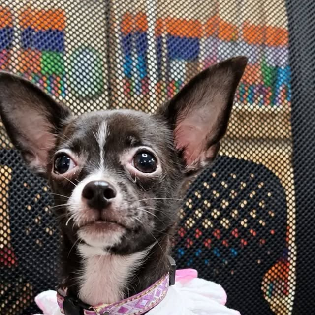
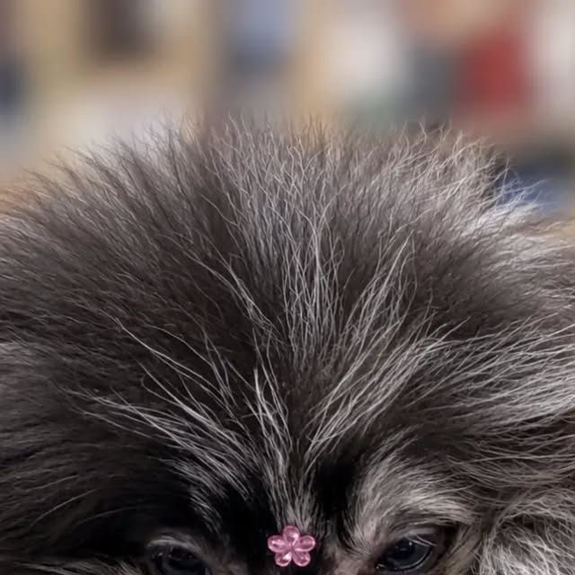
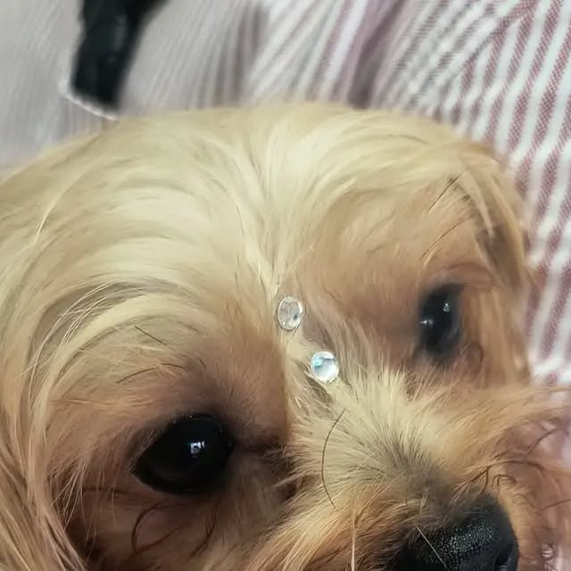
Medicina preventiva y consultas para perros y gatos.
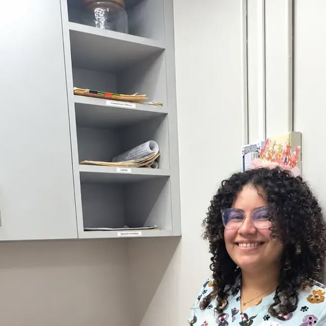
Cirugía general y esterilización con cuidado experto.

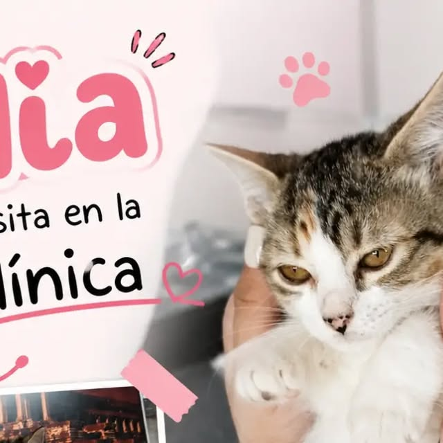
Diagnóstico por imagen y análisis de laboratorio.
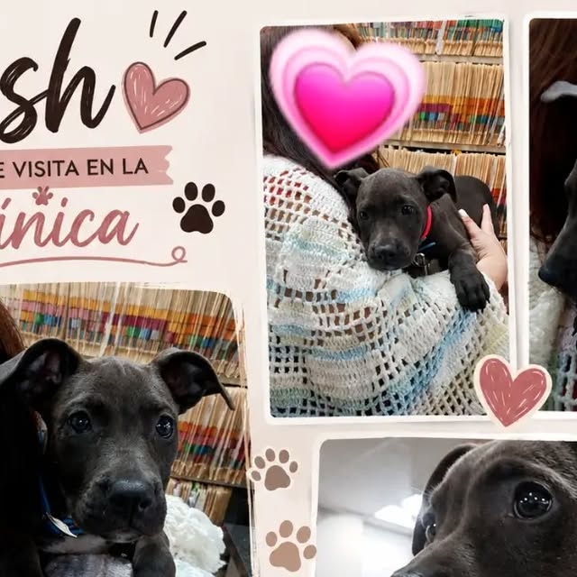
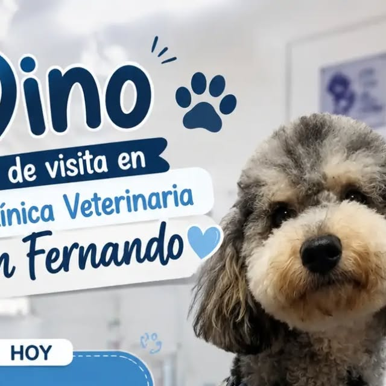
Calendario de vacunación completo para tu mascota.
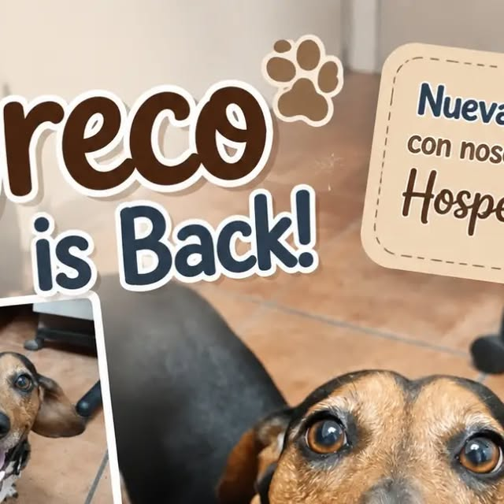
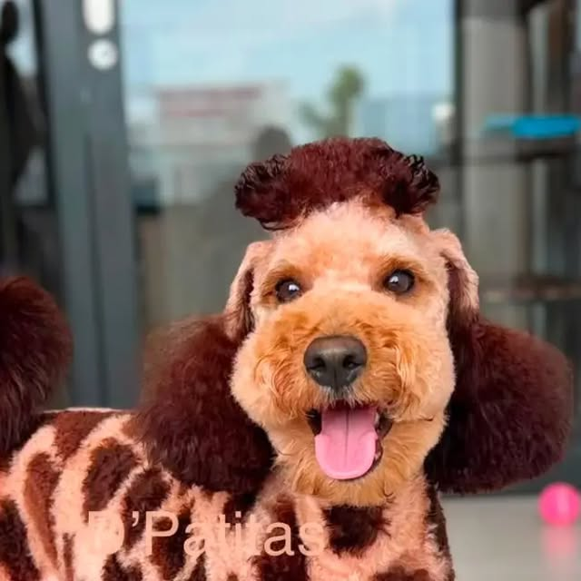
Hospedaje seguro y cómodo para tu mejor amigo.
Galería
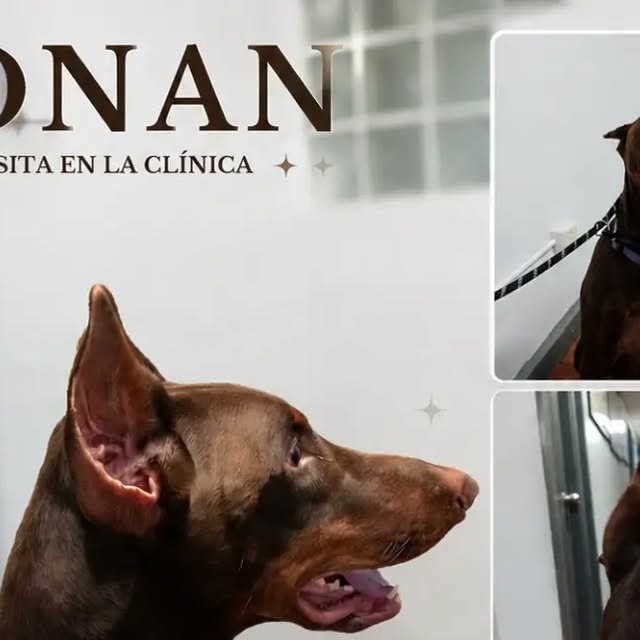
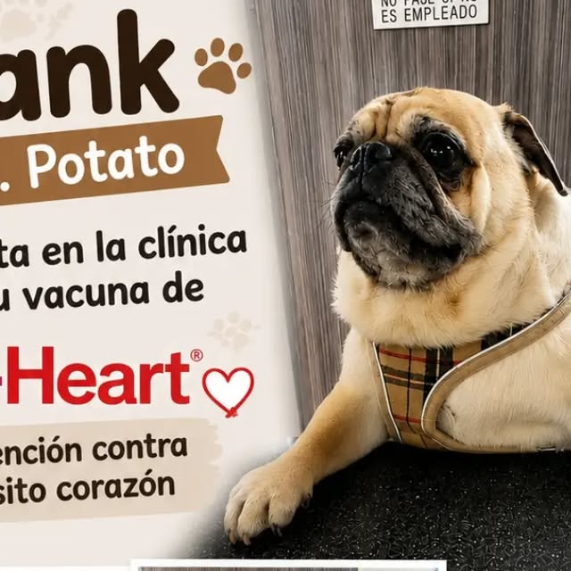
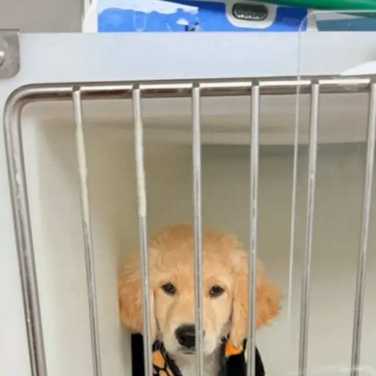
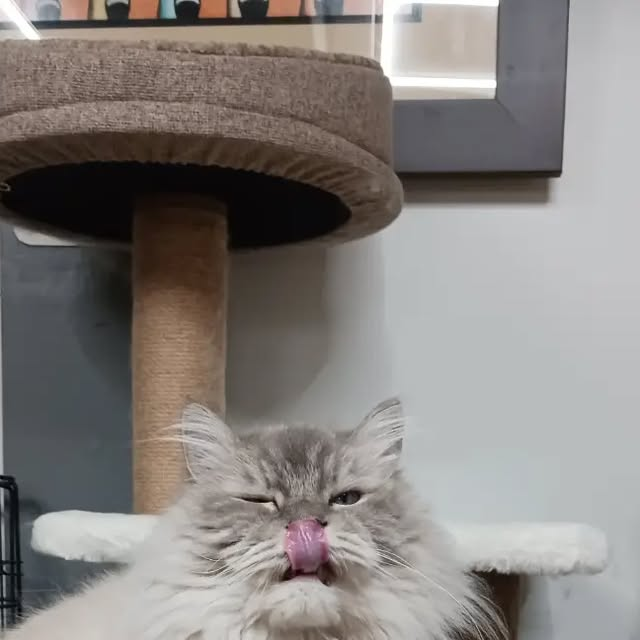
Quiénes somos
Clínica Veterinaria San Fernando en Bayamón: el Dr. José González ejerce desde 1994. Consultas, cirugía, radiografía, laboratorio, vacunación y hospedaje para perros y gatos. 787-787-2310.
Hablar con nosotrosPreguntas frecuentes
Estamos en Bayamón, Puerto Rico.
Cuidado veterinario y más: Consultas, Cirugía y esterilización, Radiografía y laboratorio.
Escríbenos por WhatsApp al 787-787-2310 o llena el formulario de contacto y te respondemos por WhatsApp.
Sí, síguenos en Instagram como @@sanfernandovet1.
Llámanos al 787-787-2310 y te orientamos. El Dr. José González ejerce desde 1994 en Bayamón.
Desde 1994